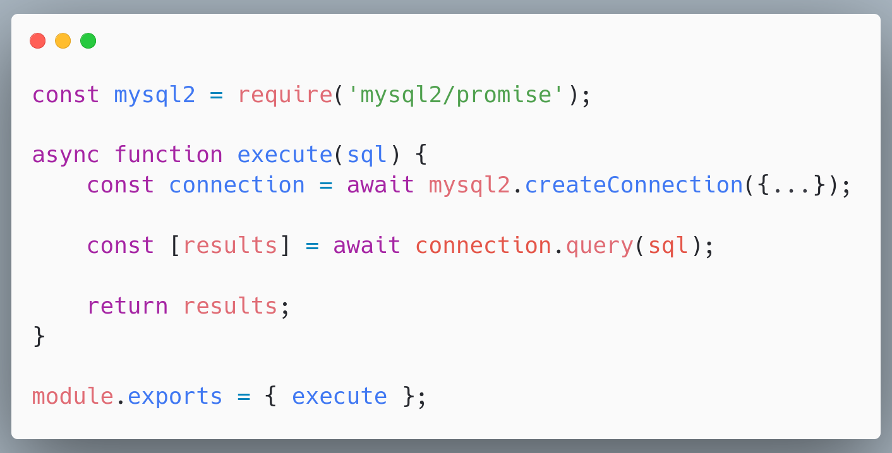
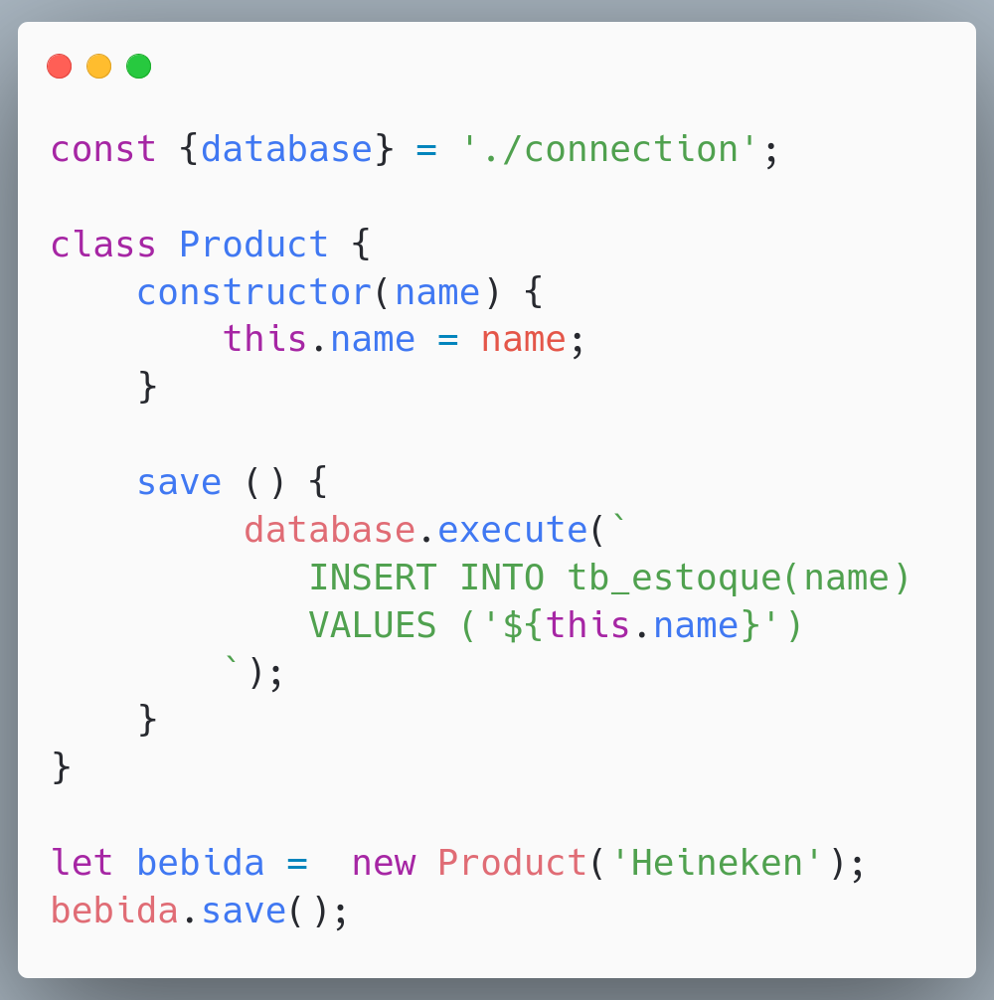
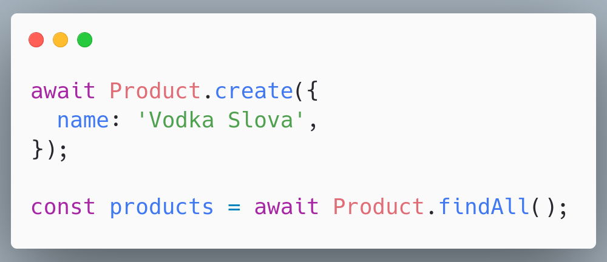
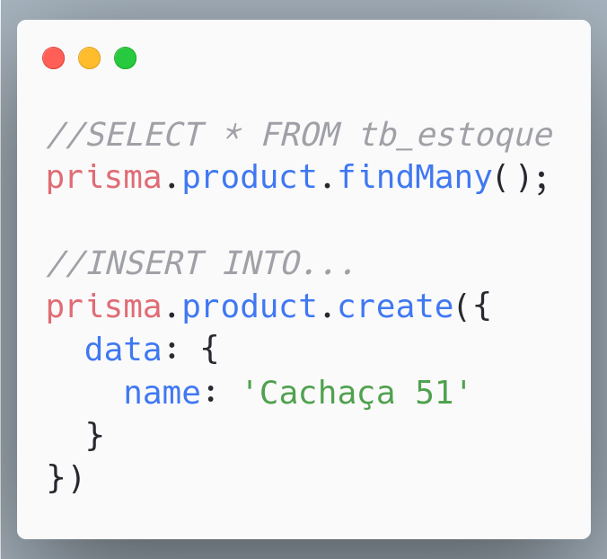

üêòüèúÔ∏èü§†
Database Patterns
Não adianta só usar tem quer saber
PHPeste 2025 | 2025-10-02 16:27
Database Patterns
não adianta só usar
Quem sou eu?
Francisco Alessandro Feitoza de Patricio da Rocha de Sousa da Silva
um dos maiores nomes desse evento
Alessandro Feitoza
- Fortaleza, Ceará
- Professor de c√≥digos e outras computarias ( Õ°¬∞ Õú ñ Õ°¬∞)
- Programador/Dev/Severino
- PHP com Rapadura | PHPeste
- Backend Developer Bússola Social

A questão é:
Fazer nosso código acessar o banco
⚠️ Essa talk não é um mandamento
- É uma coletânea de devaneios que tenho baseados na academia, literatura, e conhecimento das ruas
- Só quero que você abra sua mente, seja mais crítico nas pequenas decisões (ou entenda porque elas foram tomadas)
- Aproveite o que achar bom e descarte o restante
Arquitetura
Código
Opções
- O jeito Mundano (PHP/JS das ruas)
- Active Record
- Data Mapper
- Repository Pattern*
Jeito Mundano
- Esquema do banco - Feito manualmente por fora da aplicação
- Performático* - Não existe nenhuma camada entre o seu código e o banco
O esquema do banco

PHP com MySQLi
PHP com PDO

NodeJS com mysql2
NodeJS com mysql2

ACTIVE RECORD
- Model/Modelo - Uma classe que representa um registro em uma tabela
- Acoplamento Forte - Está diretamente ligado ao esquema
- Fácil de usar - Não é necessário criar os principais métodos
Active Record
Um objeto que envolve uma linha em uma tabela ou exibição de banco de dados, encapsula o acesso ao banco de dados e adiciona lógica de domínio a esses dados.


E no Javascripto?
ELOQUENT (Active Record)
- PHP - O Laravel o traz por padrão
- ORM - Object Relational Mapper
- Bancos - MySQL, PostgreSQL, MS SQL Server, SQLite...
- Atributos/Colunas - São definidos em uma classe de modelo
PHP: Eloquent

JS: Sequelize
JS: Prisma
DATA MAPPER
não confunda com Data Mapping
DATA MAPPER
- Entity/Entidade - Uma classe que apenas modela um registro em uma tabela
- Acoplamento Fraco - Há uma camada a parte para consumir o banco (SoC)
- Menos Fácil de implementar - fornece uma robustez maior, que pode ser entendido como barreira
PHP: DOCTRINE (Data Mapper)
- PHP - Doctrine (O Symfony* o usa por padrão)
- ORM - Object Relational Mapper
- DBAL - Database Abstraction Layer
- Bancos - MySQL, PostgreSQL, MS SQL Server, SQLite...
- Atributos/Colunas - São definidos em uma classe de modelo ou XML/YAML isolado*
PHP: Doctrine

PHP: Doctrine (XML)

PHP: Doctrine
JS: TypeORM*

Jeito mundano
%%{init: {'theme': 'light', 'themeVariables': { 'darkMode': false }}}%%
flowchart LR
codigo(Nosso código) <--> db[(Banco de Dados)]
Active Record
%%{init: {'theme': 'light', 'themeVariables': { 'darkMode': false }}}%%
flowchart LR
codigo(Nosso código) <--> m[Model] <--> db[(Banco de Dados)]
Data Mapper
%%{init: {'theme': 'light', 'themeVariables': { 'darkMode': false }}}%%
flowchart LR
subgraph flow
codigo(Nosso código) <--> D[DataMapper] <--> db[(Banco de Dados)]
end
D <--- |Consulta para saber qual esquema| e(((Entity)))
Repository Pattern
%%{init: {'theme': 'light', 'themeVariables': { 'darkMode': false }}}%%
flowchart LR
subgraph nosso codigo
codigo(Service/Controller/Action) <--> R[Repository]
end
subgraph ORM
R <--> D[DataMapper] <--> db[(Banco de Dados)]
end
D <--- |Consulta para saber qual esquema| e(((Entity)))
codigo <--- |instanciar| e
E é isso
Como dizia minha ex:
Terminamos
DÚVIDAS?
Referências
@alessandro_feitoza
https://linkedin.com/in/AlessandroFeitoza
slides.feitoza.tec.br